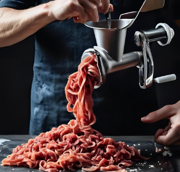
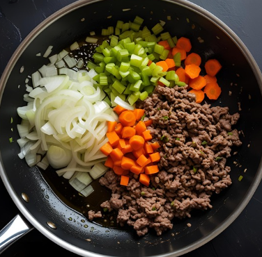
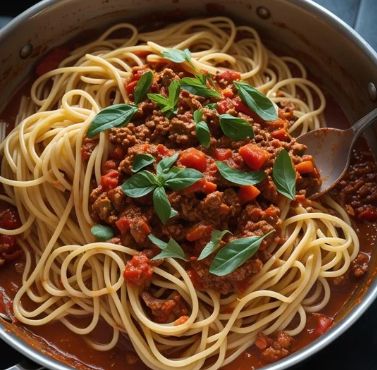

Рецепт пасти "Болоньєзе"
Інгредієнти:
- 400 г пасти
- 0,5 кг яловичини
- 0,5 кг свинини
- 0,5 кг помідорів
- 2 цибулини
- 2 моркви
- 2 стебла селери
- 250 мл бульйону
- 150 мл сухого вина
- оливкова олія
- орегано
- чебрець
- сіль
Приготування
- Яловичину та свинину вимити, нарізати невеликими шматочками та провернути через м'ясорубку.

- Дрібнорубану цибулю спасерувати на олії до прозорості, додати нарізані дрібними кубиками селеру і моркву і смажити до м'якості
- Ввести м'ясний фарш і продовжувати смажити, постійно помішуючи і розбиваючи грудочки, до зарум'янювання.
- У обсмажений фарш влити вино і тушкувати 5-7 хвилин, поки випарується алкоголь.

- Додати нарізані кубиками помідори, влити бульйон, посолити, поперчити, приправити орегано і чебрецем і томити на повільному вогні до загусання.

- Відварити пасту в підсоленій воді до стану al dente, відцідити, перекласти до соусу, перемішати і прогріти разом не більше 1 хвилини.
- Вау! Ваша паста Болоньєзе готова до подачі — смачного!